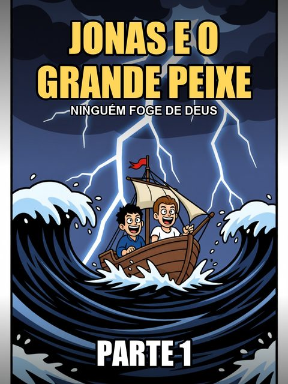
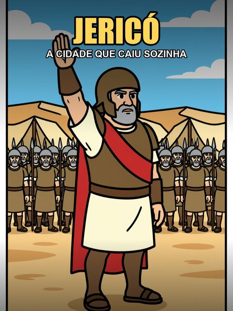

Davi e Golias
1 Samuel 17Um exército inteiro parado de medo, e o menino que ninguém levava a sério desce ao vale com cinco pedras.
Cada episódio é uma história bíblica inteira — quadros ilustrados, narração e trilha — em vídeos curtos de um a dois minutos. Sem pregação e sem opinião: só a história, do começo ao fim, com a referência do capítulo sempre à vista.
Bible stories told as an epic: illustrated, narrated short videos. New episode every week.
Assistir no TikTokUm exército inteiro parado de medo, e o menino que ninguém levava a sério desce ao vale com cinco pedras.

Ele comprou passagem para o lado oposto do mundo. O mar, o barco e o peixe discordaram.

Uma lei feita sob medida para matar um homem que só fazia uma coisa: rezar de janela aberta.

Cem anos construindo um barco longe do mar, sob risada da cidade inteira.

Com o exército atrás e a água na frente, o caminho se abriu no meio do mar.

O homem mais forte da terra perdeu tudo por uma pergunta repetida quatro vezes.

Sete dias de volta, nenhum golpe, e a muralha mais grossa do mundo no chão.

Vendido pelos irmãos, esquecido na prisão, e governando o país que o comprou.
O roteiro sai direto do texto bíblico, dividido em cenas. Cada cena vira um quadro ilustrado, a narração é gravada por cima e o conjunto é montado em vídeo vertical com legenda queimada. As ilustrações e a voz são produzidas com apoio de ferramentas de inteligência artificial, e por isso todo vídeo vai marcado como conteúdo gerado por IA — na plataforma e aqui. A escolha das histórias, o roteiro e a edição são feitos por nós.
Mais detalhes na página Sobre.